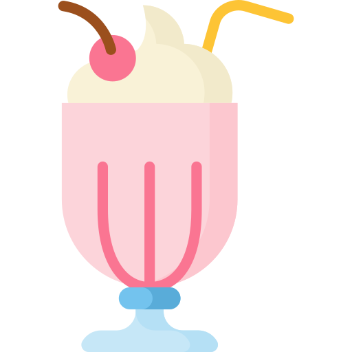

Batido de banana y avena

Milkshake icons created by Freepik - Flaticon
Descripción
Batido ideal para el desayuno. Ligero, saludable y rápido. Elaborado
con bananas, avena, leche de su preferencia y chía
Ingredientes
Pasos
- Agregue en una licuadora 3 cucharadas de avena
- Agregue 3 bananas partidas por la mitad
- Agregue cucharada y media de semillas de chia
- Agregue leche al gusto
- Procese la mezcla